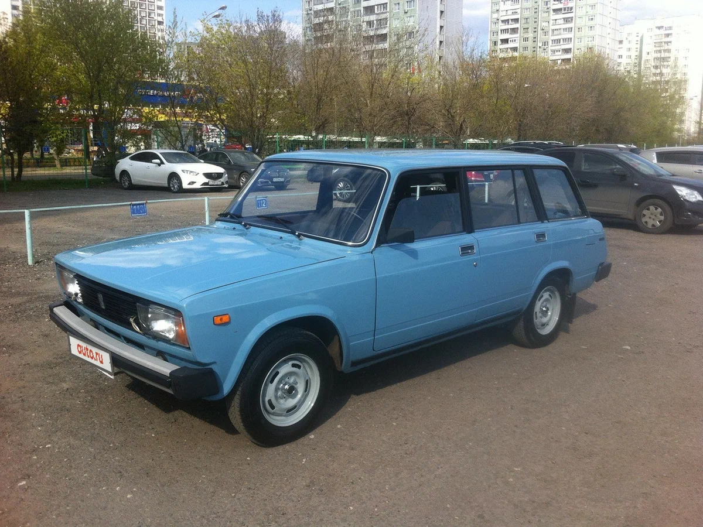
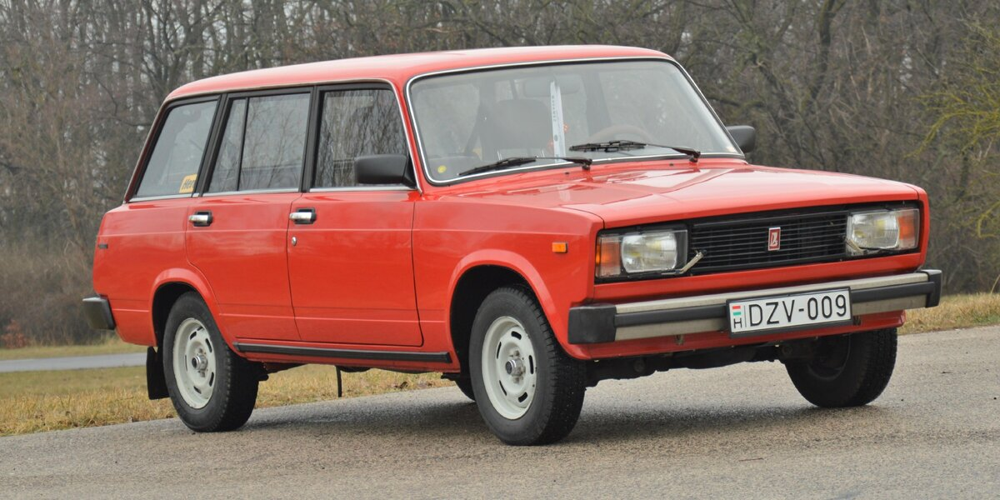
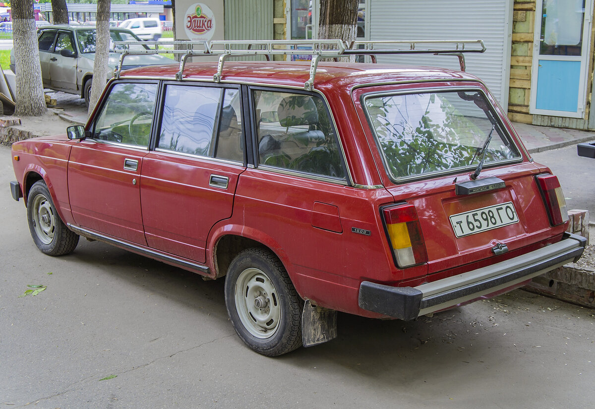
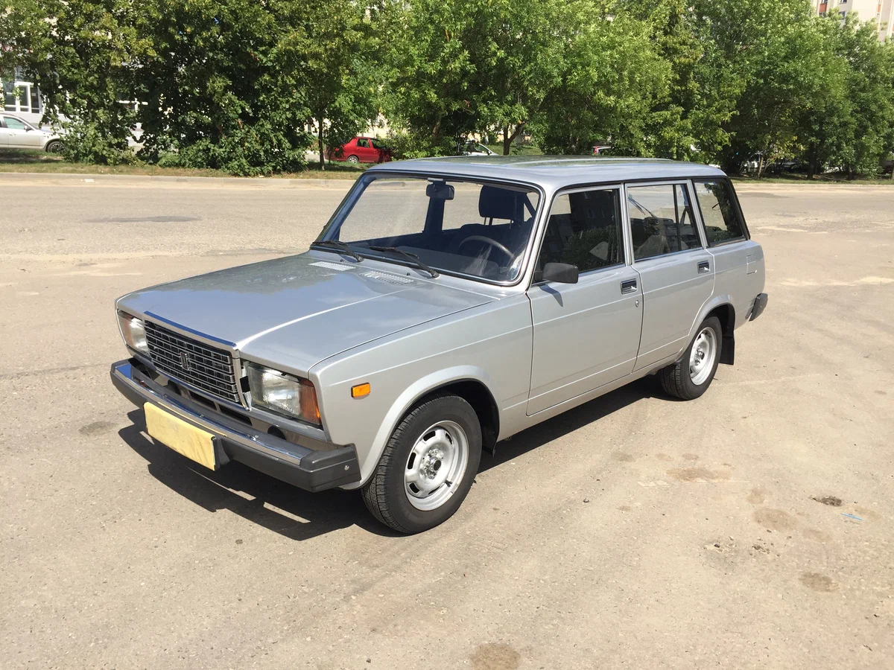
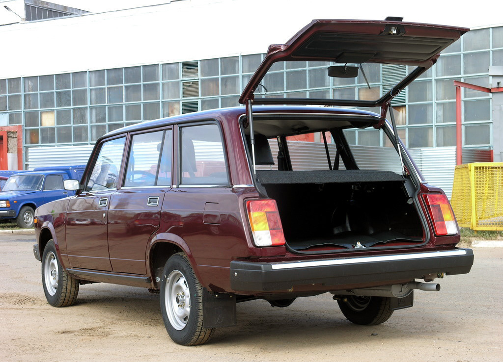

ВАЗ-2104 «Жигули» (LADA2104) - советский и российский заднеприводный автомобиль III группы малого класса с кузовом типа универсал. Разработан на Волжском автомобильном заводе. Выпускался со 2 июля 1984 по 17 сентября 2012 года .
Серийный выпуск автомобиля ВАЗ-2104 («четвёрки») был начат на Волжском автомобильном заводе во второй половине 1984 года. Параллельно с новой моделью выпускали аналогичный по классу автомобиль ВАЗ-2102 («двойка»), который к апрелю 1986 года был полностью вытеснен с конвейера. От автомобиля-«донора» «четвёрке» достался ряд оригинальных деталей, касающихся задней части авто.
При создании этой модели конструкторы руководствовались важной особенностью того времени: создание новой модели с минимальными затратами на производство и максимальным потребительским эффектом. Поэтому за основу была взята модель ВАЗ-2105. После удлинения крыши появились выштамповки для усиления жёсткости. Такая конструкция кузова позволяет разместить на крыше длинный багажник, перегружать который не рекомендуется, так как расчётная жёсткость кузова универсала значительно ниже, чем у седана. Задняя дверь открывалась вверх, на ней было применено абсолютно новое решение — обогрев заднего стекла и стеклоочиститель, — до 1994 года использовавшееся только в производстве автомобилей, шедших на экспорт, а затем вошедшее в стандартную комплектацию.
В конце 1990-х годов несколько лет выпускалась «улучшенная» модификация ВАЗ-21043-20, оснащённая пятиступенчатой коробкой передач, рейлингами на крыше, электрооборудованием и салоном с анатомическими передними сиденьями от ВАЗ-2107.
Салон для новой модели был позаимствован у базовой модели, за исключением заднего сиденья. Складное заднее сиденье позволяет увеличить объём багажного отсека с 375 до 1340 л, и тогда можно перевозить крупногабаритные грузы. Полная нагрузка автомобиля увеличилась до 455 кг. В базовой комплектации отделка салона довольно проста. Спартанский вариант предполагает стандартную панель с минимально необходимым набором приборов, обивку салона и сидений со стандартными съёмными подголовниками из искусственной кожи и резиновые коврики пола. Желание большего комфорта предложено удовлетворить улучшенной обивкой сидений из ворсованного трикотажа, цельноформованными накладками дверей, ворсованными ковриками пола, панелью приборов с дополнительной центральной консолью, которая располагает расширенным набором функциональных клавиш и контрольной аппаратуры, оригинальным рулевым колесом.
Так как передняя часть авто идентична моделям с кузовом седан, серийному отопителю сложнее согреть больший объём салона в холодный период года. Задняя часть авто часто запотевает в холода. У авто штатно отсутствуют задние вентиляционные отверстия для сброса салонного воздуха (в отличие от ВАЗ-2107), что затрудняет процесс закрытия дверей (с закрытыми стеклами). По сравнению с ВАЗ-2105, 2107 (с идентичными моторными установками), имеет меньшую максимальную скорость (данные из «инструкции по эксплуатации» ~137 км/ч против ~142 км/ч) в связи с изменённым передаточным отношением главной передачи — 4,44 (ранние модификации) против 4,3 на седане. Задняя дверь подвержена загрязнению дорожной грязью (пылью, поднимаемой колесами), локально затягиваемой при движении на больших скоростях в зону пониженного давления — исправляется установкой на 5-ю дверь верхнего дефлектора, подающего (в зону разрежения) более чистый воздух с крыши. Ещё существует способ, как избежать накопления грязи на задней двери — это изменение конструкции заднего бампера — нижнюю часть надо выгнуть в обратную сторону и закрыть щель между бампером и кузовом — пластину 1 метр на 15 см посередине. Бензобак объёмом 43 литра (против 39) расположен горизонтально под днищем багажника без дополнительной защиты — есть вероятность повреждения при движении по пересеченной местности.
В 1999 в Тольятти мелкой серией стала выпускаться модификация ВАЗ 21045 с дизельным двигателем ВАЗ-341 производства «Барнаултрансмаш» объёмом 1,52 литра с ТНВД Bosch. С 2005 года предполагалась установка более мощной версией дизельного мотора объёмом 1,8 литра (модификация ВАЗ-21048), однако эти планы остались нереализованными.
Дизельная модификация отличалась значительно большей стоимостью и меньшей мощностью силовой установки, несмотря на то, что в данные года дизельное топливо стоило заметно дешевле бензина, экономическая целесообразность приобретения данной версии была под сомнением.
В 2004 году производство ВАЗ-21045 было прекращено, оставшимися неустановленными дизельными двигателями в количестве 500 штук была укомплектована партия новой модификации ВАЗ-21055.
С 2003 года производство переехало в г.Ижевск. Под конец выпуска автомобиля это уже скорее был не ВАЗ-2105 в кузове универсал, а ВАЗ-2107 в кузове универсал.
Ранний автомобиль


Поздниий автомобиль

